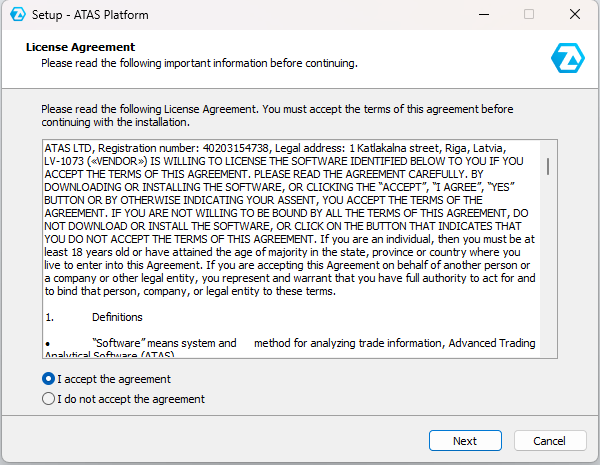
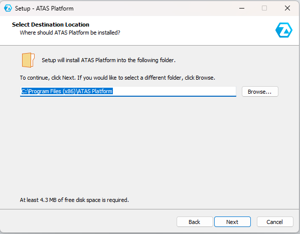
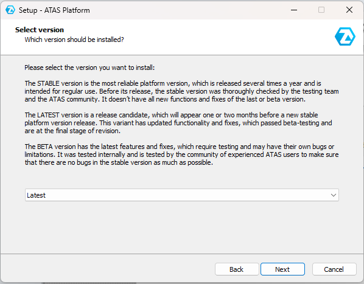
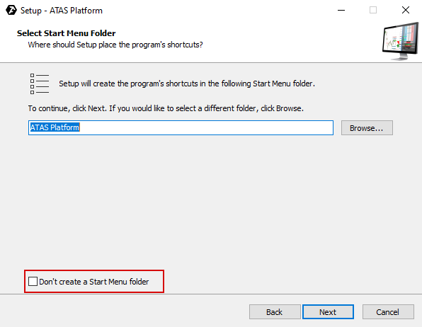
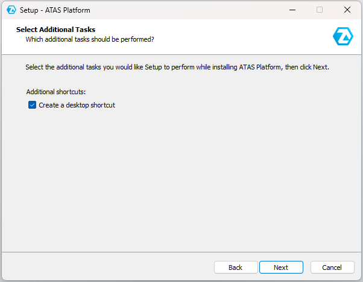
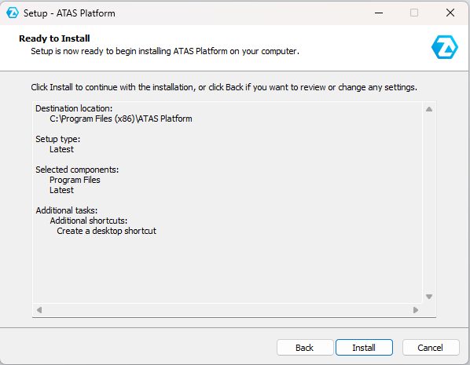
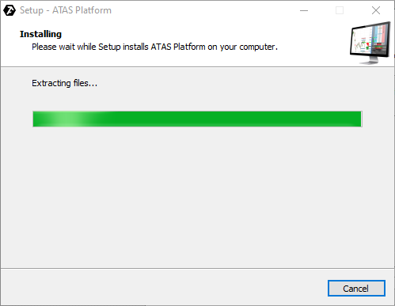
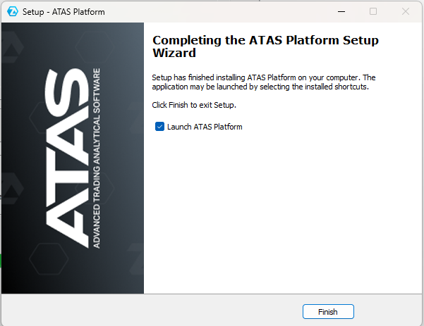
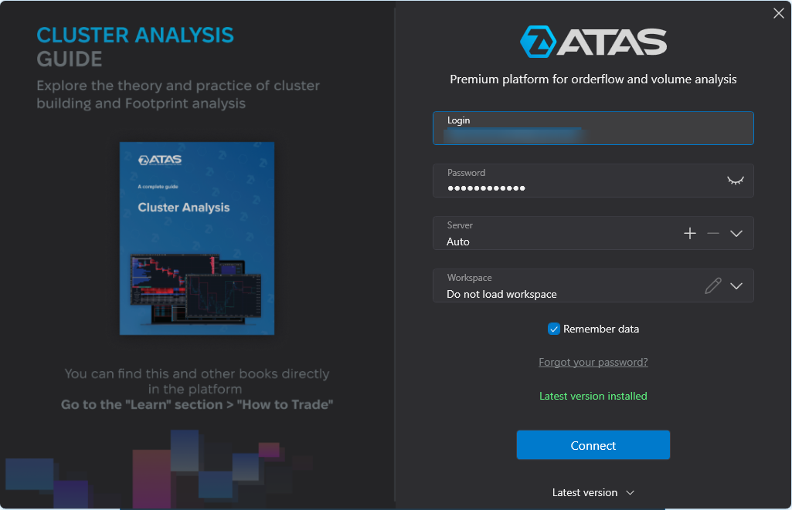
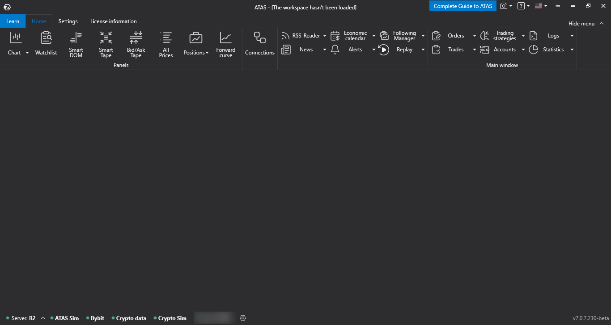

How to install ATAS on Windows?
Updated
Getting your free ATAS license
Before installing ATAS, register for your free GFF ATAS license here:
https://atas.net/goat-funded-futures/
Your ATAS login credentials will be sent to you after registration.
To log into the platform, you must use the email and password that you used to register on the site.
Video instruction on registration and installation of ATAS platform
After purchasing an account on ATAS platform with Goat Funded Futures site, login into the Dxfeed Dashboard got to download section and click on the Download ATAS to download the installation file.
Before proceeding with further installation, you must read the license agreement, if everything suits you, select: I accept the agreement / I accept the terms of the agreement, click Next

The program will offer a default installation directory on the “C” drive, you can also select the installation directory yourself, after creating a folder for the program on the drive you need, by clicking on the Browse... button, then click on theNext button.

The program will prompt you to select the version of the platform that you would like to install.
Select the version you need and click the Next button.

The program will prompt you to select a folder in the Start menu.
Check the box if you do not want the folder to be created in the Start menu.
Then click on the Next button.

Check the box if you want the program to create a shortcut on the desktop.
Then click the Next button.

After that, a window will appear with the settings you have chosen, if everything suits you, click Install.
Then the installation process will begin.


After the installation of the program is completed, this window will appear:

The program is installed, click Finish / Finish.
In order for the program to start automatically, check the Launch ATAS option.
After installation, run the ATAS program and log in with your login and password that were sent to you by mail after registration, select the server manually or leave it on Auto (all servers are the same), then click the Connect button.

In order not to enter your login and password each time, check the box Remember data.
You can find the list of supported instruments here:
Available Instruments in the ATAS Platform
Then, the main program window will be opened.

This concludes the installation of the program.